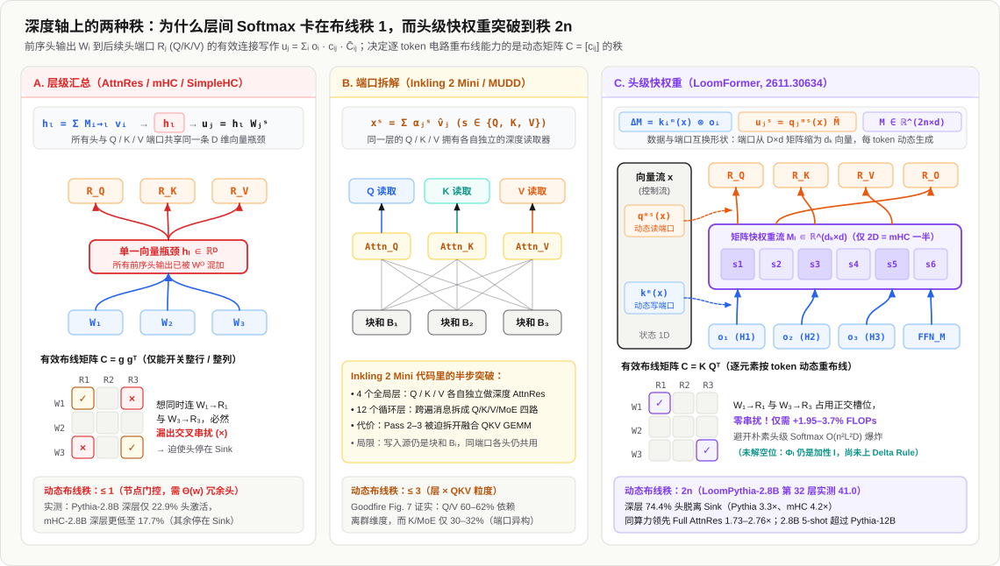
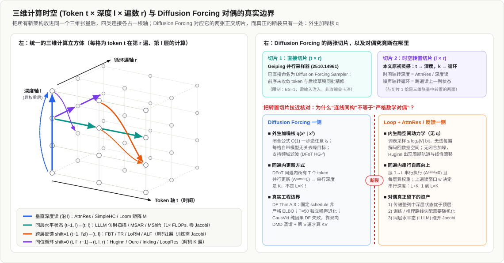
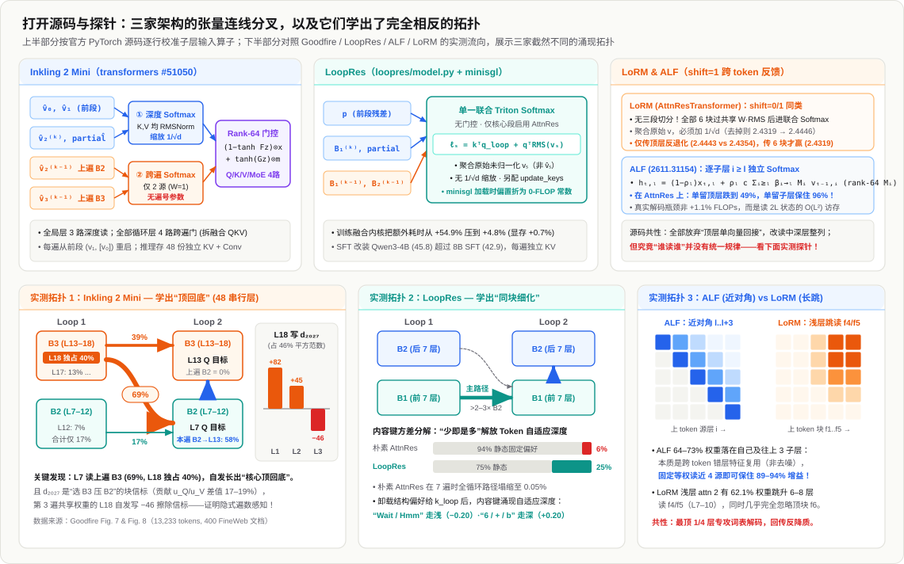
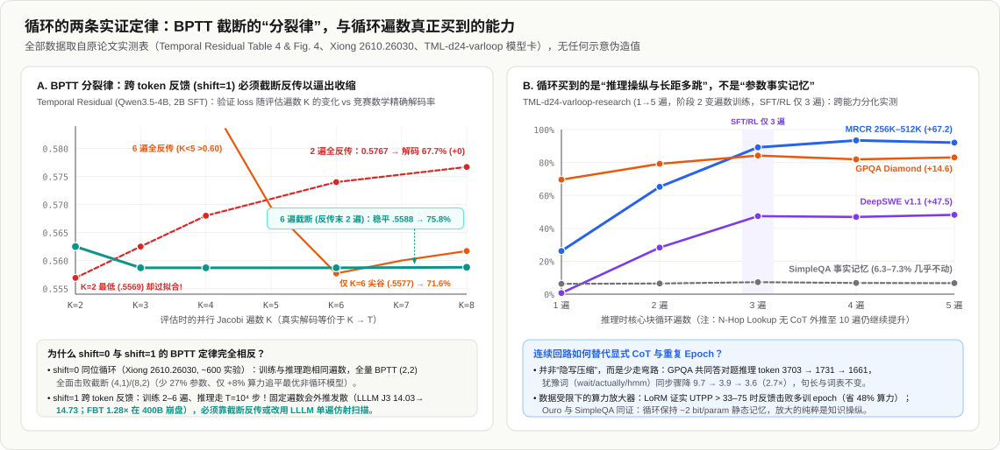
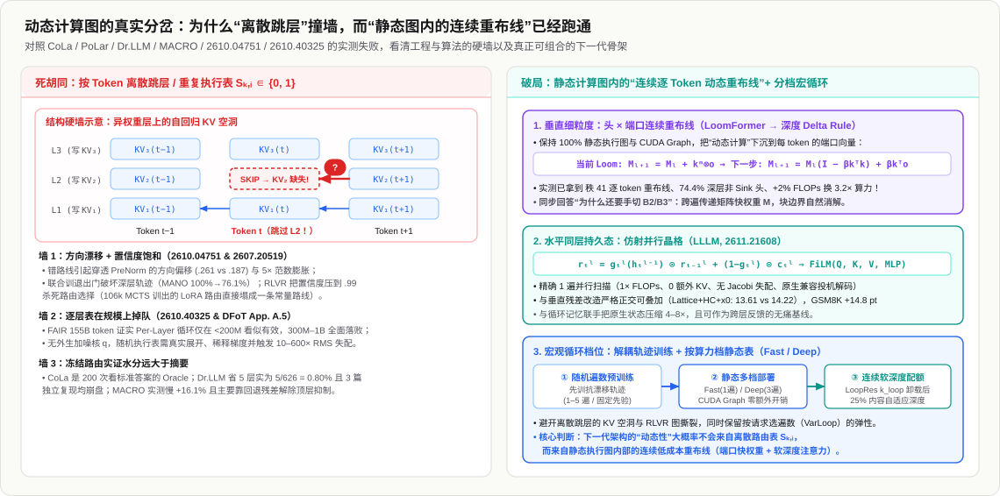

残差流之外：头级快权重、三维计算网格与 Diffusion Forcing 对偶的边界
如果把 2026 年最热闹的三条架构线——深度残差改造、Looped Transformer 与 Latent Feedback——放进同一套坐标系并拆到代码粒度，会发现两个意料之外的结论：在微观上，决定深度连接上限的不是“层间用不用 Softmax”，而是能否打破单向量瓶颈、把头级快权重做成动态布线；在宏观上，Diffusion Forcing 的时空转置确实指出了状态传递的方向，但它恰好在“外生加噪核”处断裂，而这个断裂口，正是动态计算图撞墙的真正根源。
过去一年里，大模型架构界同时在三条看起来各自为战的战线上发力：一边是在改残差连接（AttnRes、SimpleHC、MSAR、LoomFormer），一边是让中间层在同一个 token 上原地循环（Huginn、Ouro、Inkling 2 Mini、LoopRes），还有一边是把上一个 token 的深层隐状态直接送回当前 token（LLLM、Full-Bandwidth Transformer、Temporal Residual、LoRM、ALF）。
这篇博客最初源于一个很诱人的直觉：能不能把 Diffusion Forcing 做一次时空对偶？ AttnRes 已经把序列建模里的“时间轴”对偶到了网络深度上；而 Diffusion Forcing 除了时间轴，还有一根独立的“噪声轴”。如果把时间轴转到深度得到 AttnRes，把噪声轴转过来，是不是就顺理成章地得到了 Looped Transformer 和 Latent Feedback，甚至预言出“每层拥有独立循环次数”的动态计算图？
顺着这个直觉，我把这些论文的正文、配图和开源代码（包括 Inkling 2 Mini、LoopRes、LoRM 和最新放出的 LoomFormer）从头拆了一遍。结果比原本的猜想更有意思，也更尖锐：那个高层的二维对偶既对了一半，又在两个最关键的地方漏了底。
第一个漏底在粒度。我们之前一直站在“层”和“块”的高度谈时空对偶，默认深度轴上的终极形态就是层间 Softmax。但刚出来的 Loom Attention（LoomFormer） 给出了一个反直觉的实测：一个只维护固定大小线性快权重矩阵的模型，在深度轴上居然以 1.73–2.76 倍的算力优势击败了不压缩的 Full Softmax AttnRes。只要往下钻一层粒度，看到每个注意力头与 Q/K/V 端口之间那张被藏起来的“布线矩阵”，谜底就会立刻揭开。
第二个漏底在对偶本身。把所有工作摊开在一张三维计算张量（Token \(t \times\) 深度 \(l \times\) 遍数 \(r\)）里，Diffusion Forcing 的确是一面极其锋利的诊断镜，但它绝不是严格的数学等价。两边真正断掉的那根梁——有没有外生加噪核 \(q(x^{(k)} \mid x^{(0)})\)——不仅解释了为什么循环模型不能像扩散模型那样每遍解码，还直接揭示了为什么“训练后按 token 离散跳层”撞上了四堵硬墙，以及真正的动态计算应该往哪里长。
这篇文章不是一篇面面俱到的 2026 架构综述。我会沿着几个具体的问题、失败的尝试和代码里的反常细节往前推，把能落到代数和实测上的地方讲透，把类比断掉的边界标清楚。
一、时空对偶的盲区：为什么“层间 Softmax”反而输给了“头级快权重”？
标准 PreNorm Transformer 的残差更新看似平淡无奇：记第 \(i\) 个子层的输出为 \(v_i = f_i(h_i)\)，\(v_0\) 为 token embedding，展开后每一层拿到的其实是之前所有层输出的等权累加：
\[ h_l = h_{l-1} + f_{l-1}(h_{l-1}) = \sum_{i < l} v_i \]AttnRes 给过一个极其优雅的观察：把下标从时间步 \(t\) 换成层号 \(l\)，标准残差流就是深度轴上的固定状态 RNN。 序列建模当年之所以从固定状态的线性累加 \(S_t = S_{t-1} + k_t v_t^\top\) 走向 Softmax 自注意力，是因为所有历史都被压进同一个向量会不断稀释早期信息；AttnRes 在深度轴上迈出了对称的一步，把残差连接统一写成深度混合矩阵 \(M\)：
\[ h_l = \sum_{i < l} M_{i \to l} v_i \]当 \(M_{i \to l} = 1\) 时是标准残差；当 \(M\) 可以分解成读门与写门乘积（即半可分矩阵）时，求和可以折叠回固定大小的多流递推（Highway、Hyper-Connections、mHC）；当 \(M_{i \to l} = \mathrm{softmax}_i(w_l^\top \mathrm{RMSNorm}(v_i))\) 时，Softmax 无法拆开，模型必须保留之前各层（或各块）的输出按需检索——这就是 time–depth duality（时空对偶）。
故事讲到这里看起来非常圆满。但只要你真去读论文的消融表，马上会撞上两个刺眼的反常：
第一个反常藏在 AttnRes 自己的 Table 4 里。在时间轴上，多头（multi-head）几乎是自注意力的全部威力所在；可一旦在 Block AttnRes 上把深度注意力切成 16 个头，验证 loss 不仅没降，反而从 1.746 恶化到了 1.752。
第二个反常更加剧烈。如果时空对偶意味着“深度轴上不压缩的 Softmax 注意力优于固定状态的线性递推”，那怎么解释 LoomFormer（arXiv:2611.30634） 的结果？LoomFormer 在深度轴上用的恰恰是固定大小的线性注意力递推，每个 token 的矩阵状态只有 \(2D\)（连 mHC 四流 \(4D\) 的一半都不到），额外 FLOPs 只有 1.95%–3.7%，结果在 Pile 缩放曲线上不仅以 3.2 倍算力优势碾压 Transformer++，还以 1.73–2.76 倍算力优势全面击败了 mHC、MUDDFormer 和不压缩的 Full Softmax AttnRes；300B token 训出的 LoomPythia-2.8B，5-shot 均分 61.6 直接超过了参数大四倍多的 Pythia-12B（60.8）。
一个固定大小的深度线性递推，怎么可能打赢不压缩的深度 Softmax？
深度轴上藏着两种完全不同的“秩”
答案在于，我们一直把层间混合秩（depth-mixing rank）和头间动态布线秩（wiring rank）混成了一件事。
按电路视角（Elhage et al.），Transformer 真正干活的最小单元不是“层”，而是注意力头。前序某个头 \(W_i\) 算出输出 \(o_i \in \mathbb{R}^d\)，经输出投影 \(W_i^O \in \mathbb{R}^{d \times D}\) 写进残差流；后续某个头的一个端口 \(R_j\)（\(s \in \{Q, K, V\}\)）再经 \(W_j^s \in \mathbb{R}^{D \times d}\) 读出来。两者之间的静态虚拟权重是 \(\bar{C}_{ij} = W_i^O W_j^s \in \mathbb{R}^{d \times d}\)。如果架构允许在每个 token 上动态调节连接强度 \(c_{ij}\)，端口 \(R_j\) 收到的信号可以写成：
\[ u_j = \sum_i o_i \, c_{ij} \, \bar{C}_{ij} \]所有前序头写者（共 \(w = nl\) 个）到当前层所有读端口（共 \(r = 3n\) 个）的动态系数排成一个矩阵 \(C = [c_{ij}] \in \mathbb{R}^{w \times r}\)。现在回头看看 AttnRes、HC、mHC、SimpleHC 乃至 MSAR 做了什么：无论它们在层间算了多么花哨的 Softmax 或四流混合，在送进 \(W^Q, W^K, W^V\) 之前，全部信息又被重新压回了同一条 \(D\) 维向量 \(h_l\) 里。
这一压，灾难就来了。当前层全部 \(3n\) 个读端口看到的都是同一个 \(h_l\)，而前序同一层里各个头的输出也早已通过 \(W^O\) 焊死在了一起。即便加上 Pre-LN 缩放，整个动态布线矩阵 \(C\) 仍然只能写成外积形式 \(C = g g'^\top\)——动态布线秩被死死锁在 \(\le 1\)。LoomFormer 把这种受限机制叫做节点门控（node-gated）：你只能整行或整列地开关整个头，无法在同一个 token 上把“头 \(W_1 \to R_1\)”和“头 \(W_3 \to R_3\)”同时接通而不漏出交叉串扰 \(W_1 \to R_3\) 和 \(W_3 \to R_1\)。定理 2.4 甚至给出了它的组合学代价：靠节点门控实现无串扰的任意布线，每个读端口需要 \(\Theta(w)\) 个冗余头，在 \(D=nd\) 的维度预算里根本塞不下。
模型被迫找了一条极其浪费的退路：Attention Sink。既然无法按 token 单独断开不想要的电路连线，深层注意力头唯一能做的，就是把注意力全部丢给首词元（sink token）来把整个头“关机”。LoomFormer 在 2.8B 规模上的探针给出了令人震惊的实测（Fig. 6c）：在后半段（17–32 层），标准 Pythia-2.8B 只有 22.9% 的头处于非 Sink 工作状态，而拥有 4 条流的 mHC-Pythia-2.8B 甚至更惨——只有 17.7% 的头在干活，超过八成的深层注意力头仅仅因为残差流在层口合流，被迫常年停在 Sink 上当开关！


一次失败的尝试，以及“数据与端口互换形状”的快权重解法
怎么把布线秩从 1 拉高？最自然的想法是直接把 AttnRes 下沉到头粒度：让第 \(l\) 层的每一个读端口 \(R_j\)，直接对前面所有 \(nl\) 个头的原始输出 \(o_i\) 做一次内容相关的 Softmax（朴素 Loom Attention）：
\[ u_j = \sum_{i=1}^{nl} \alpha_{ij}(x) \, o_i, \qquad \alpha_{\cdot j}(x) = \mathrm{softmax}(x W_j^\alpha) \]但这笔账一算就炸了。跨 \(L\) 层、每层 \(3n\) 个读端口，光生成权重矩阵 \(W_j^\alpha \in \mathbb{R}^{D \times nl}\) 就要吃掉 \(\frac{3}{2} n^2 L^2 D\) 的参数和乘加——在 1.4B XL 模型上，这一项开销就占掉了整张网络 70% 的体量。这和序列建模里面对超长上下文的窘境一模一样：当“深度 KV cache”的元素从 \(L=32\) 个层暴涨到 \(nL=1024\) 个头时，全量 Softmax 变得太贵了。
序列建模给出的解法是线性注意力 / 快权重（Fast Weight Programmers）：把不断增长的 KV 缓存压缩进一张固定大小的联想记忆矩阵 \(S_t = S_{t-1} + k_t \otimes v_t\)。把它原样搬到头粒度的深度轴上，就是 LoomFormer 的核心结构：在原有向量流 \(x \in \mathbb{R}^D\) 旁边，维护第二条每 token 独立的矩阵快权重流 \(M \in \mathbb{R}^{d_k \times d}\)（\(d_k = 2n\) 个宽度为 \(d\) 的槽位，总大小只有 \(2nd = 2D\)）。
对比两条流的读写接口，会发生一次极其漂亮的形状互换：
\[ \begin{aligned} \text{向量流（控制流）：}\quad & u_j = x W_j^s, \qquad\;\; \Delta x = o_i W_i^O \\ \text{矩阵流（内容流）：}\quad & u_j = q_j^{m,s}(x)\, \widetilde{M}, \quad \Delta M = k_i^m(x) \otimes o_i \end{aligned} \]在向量流里，数据是向量 \(x\)，端口是庞大且训练后冻结的矩阵 \(W_j^s \in \mathbb{R}^{D \times d}\)；在矩阵流里，数据升级为矩阵 \(M\)，端口则骤缩成长度为 \(d_k\) 的极小向量 \(q_j^{m,s}(x)\) 和 \(k_i^m(x)\)——小到可以由向量流 \(x\) 在每一个 token、每一个头、每一个 \(Q/K/V/O\) 端口上动态生成！每个头的未混加输出 \(o_i \in \mathbb{R}^d\) 直接外积写入 \(M\)（连同 \(\mathrm{FFN}_M\) 作为向量流向矩阵流注入内容的唯一通道）；后续头从经过整矩阵归一化 MNorm 的 \(\widetilde{M}\) 中各自按需读取 \(\tilde{q}, \tilde{k}, v\) 和直通项 \(o^m\)，连水平注意力都改成了严格因果掩码（\(s < t\)，把当前 token 自身的垂直组合彻底交给 \(o^m\)）。
这一步把整个深度轴的经济学彻底改写了：
- 布线秩暴涨：\(C = K Q^\top\) 的理论秩达到 \(\min(d_k, 3n) = 2n\)；在 LoomPythia-2.8B 第 32 层实测动态有效秩高达 41.0（90.7% 的动态能量在秩 1 之外），即便单看 Q、K、V 任一端口内部，有效秩也达到 20.9。
- 解放被 Sink 锁死的头：深层 17–32 层的活跃非 Sink 头比例从 Pythia 的 22.9% 和 mHC 的 17.7% 飙升到 74.4%（4.2 倍于 mHC！），首两词元 Sink 权重从 27.2% 骤降到 1.5%。
- 极低访存与实测吞吐：把 \(d_k\) 降到 16（整条矩阵流仅 \(1D\)，双流合计 \(2D\)）就已经全面击败 \(4D\) 的 DHC 和平均 \(9D\) 的 MUDDFormer（Fig. 7）；在定制 Pallas/Triton 融合内核下（把上一层的两次 MWrite 与当前层的 MShift + MNorm + 4 MRead 压进单次 HBM 扫描），TPU v5p 训练保持 89%–92% 吞吐，A800 BF16 推理保持 84%–92% 吞吐。
三块独立拼图在同一处合拢
站在“粒度 × 快权重”的视角回头看 2026 年另外三篇原本看似分散的工作，它们一下子全对上了号：
- SimpleHC（2611.05984） 证明层间快权重根本不需要昂贵的混合矩阵，且自带“深度分块线性注意力”：Hyper-Connections / mHC 虽然 FLOPs 增加不到 1%，却因为每子层反复搬运 \(nC\) 宽状态在端到端训练里拖慢 7%–27%，还在 230B-A6B 的高学习率压测中爆出 \(1.9 \times 10^6\) 的梯度尖峰。SimpleHC 在 15B 和 30B MoE 上拆解后发现，把 Sinkhorn 混合矩阵直接设为单位阵 \(H_l^{\mathrm{res}} = I\)，效果不但不掉（30B 14 项均分 63.1 vs mHC 62.9），还彻底消除了梯度爆炸。更妙的是，当 \(H_l^{\mathrm{res}} = I\) 时，多流状态退化成纯粹的层级快权重外积累加 \(X_j = X_L + \sum_{k=L}^{j-1} h_k^{\mathrm{post}} o_k^\top\)；让连续 \(K=4\) 个子层共享组入口状态 \(X_L\) 生成各自的读写门，第 \(j\) 层的读取立刻展开成严格代数等价的深度分块线性注意力（chunkwise linear attention）： \[ u_j = \underbrace{X_L^\top \bar{h}_j^{\mathrm{pre}}}_{\text{跨块一次批读}} + \sum_{k=L}^{j-1} \underbrace{\big((\bar{h}_j^{\mathrm{pre}})^\top \bar{h}_k^{\mathrm{post}}\big)}_{\text{块内下三角标量修正 } D_{j,k}} o_k \] 单子层访存流量从融合 mHC 的 \(18C\) 直接腰斩到 \(9C\)，显存省 31%，6144 宽度下训练开销压到 2.4%。
- MSAR（2610.13630） 解释了为什么 AttnRes 切通道多头会失败：把已经过 \(W^O\) 全局旋转的层和向量硬切成 16 段，等于扯断了语义完整性。在不下沉到头粒度的前提下，MSAR 只能从时间轴借多样性——保持单流块摘要 \(b_j \in \mathbb{R}^d\) 存储不变，在算深度 Softmax 时用因果 1D 深度卷积（核宽 \(1, 4, 8, 12\)）即时展开 4 条完整维度的局部上下文视图，拿到 1.58× 同 loss 算力加速（AttnRes 为 1.35×）；而一旦删掉时间卷积，它相对 AttnRes 的增益立刻蒸发 75%。
- Inkling 2 Mini 在代码里已经走出了“端口拆解”的半步：很多人以为 Inkling 2 Mini 只是标准 Block AttnRes，但翻开
modeling_inkling2_loop.py会发现，它每 6 层最后一个全局注意力层给 Q、K、V 分配了 3 个独立深度读取器，而 12 个循环层更是给每个子层的跨遍消息全配了 Q、K、V、MoE 4 套独立读取器和 Rank-64 门控——为此甚至不惜在 Pass 2 和 Pass 3 里打碎融合 QKV GEMM。Goodfire Fig. 7 证实了这笔代价花得值：在跨遍路由里，Q 和 V 有 60%–62% 的打分差距来自顶部的离群坐标，而 K 和 MoE 只有 30%–32%，不同端口需要的根本不是同一条电路！
这也顺带打破了一句常被当成定理流传的判断——“时间轴的 query 依赖输入，深度轴的 \(w_l\) 与输入无关”。其实连 AttnRes 自己的 Table 4 都测过，动态 query \(q_l(h)\) 严格优于静态 \(w_l\)（1.731 vs 1.737），留静态只是为了推理批处理；而 LoomFormer 的 Table 4 更证明，把动态读端口改成静态会直接丢掉 24.6% 的总收益，读写全改静态则丢掉 44%–46.4%（退化回命题 3.1(i) 的节点门控 Transformer）。深度轴和时间轴真正的不对称不在“静态还是动态”，而在训练期有没有 Teacher Forcing：时间轴上有现成的真实 token \(x_{1\dots T}\) 可以一步并行，深度轴的中间表示 \(v_{1\dots L}\) 没有外部真值，只能逐层展开。
核心判断：时空对偶在深度轴上真正的分水岭，不是“Softmax 替代线性递推”，而是能否把状态从层级向量（布线秩 1）拆成头 × 端口的动态快权重（布线秩 \(2n\)）。而且 LoomFormer 的深度快权重目前还停留在最原始的纯加性更新（\(\Phi_l = I\)，即 \(M_{l+1} = M_l + \sum_i k_i^m \otimes o_i\)，仅靠整矩阵
MNorm控幅）——顺着序列建模从 Linear Attention 走向 Gated DeltaNet 的历史路径，把深度矩阵流的更新升级为带遗忘门或 Delta Rule 擦除-覆写（\(\Phi_l = I - \beta_i (k_i^m)^\top k_i^m\)），是眼下最干净、尚未被建造的一格。
二、三维计算立方体，以及 Diffusion Forcing 对偶真正断在哪里
单遍深度轴的细粒度已经看清了。现在把视野抬高一维，进入 2026 年另一场大合流：Looped Transformer、Latent Feedback，以及前面提到过的 Diffusion Forcing。
把这一堆架构硬往“Diffusion Forcing 时空对偶”里套时，最容易出现的拧巴——一会儿说时间轴对偶到深度，一会儿讲到 Latent Feedback 又把遍数对偶回时间轴——根源在于试图把一个三维对象硬塞进二维转置里。
现代语言模型架构的实际计算空间是一座三维立方体：Token 轴 \(t \times\) 深度轴 \(l \times\) 循环遍轴 \(r\)。把过去一年所有“多加一根轴”的工作放进这座立方体，它们极其干净地分成三种几何走法：
- 同层水平持久态 \((t-1, l) \to (t, l)\)：1× FLOPs、零 Jacobi 迭代！
除了前面 MSAR 的局部因果卷积和 LoomFormer 在同层混合 \(M_{l,[t-1]}\) 的
MShift（贡献 13.7%–15.2% 归因），把这条路走到极致的正是 Latent Lattice Language Models（LLLM, arXiv:2611.21608）。它在垂直残差流之外，给中间每一层配一条沿时间轴做 Mamba 式对角仿射递推的水平隐状态： \[ r_t^\ell = g_t^\ell(h_t^{\ell-1}) \odot r_{t-1}^\ell + \big(1 - g_t^\ell(h_t^{\ell-1})\big) \odot c_t^\ell(h_t^{\ell-1}) \] 然后用零初始化的 FiLM 从 \(\hat{r}_t^\ell\) 调制本层的 Q、K、V（同时操控读取和 KV 写入）与 MLP。关键妙处在于：门控 \(g_t^\ell\) 和候选 \(c_t^\ell\) 只依赖垂直输入 \(h_t^{\ell-1}\)，不依赖 \(r_{t-1}^\ell\)！所以整条序列在训练期可以用精确的结合律并行扫描（associative parallel scan）一遍算完，零额外 KV cache、零训练-推理失配。结果在 406M/20B 上把验证 PPL 从 15.41 压到 14.40（追平大 1.5 倍的 40 层模型），GSM8K-Aug 微调暴涨 +14.8 个点（29.7% → 44.5%），与垂直残差改造完全正交叠加（Lattice + HC + x0跌到 13.61 vsHC + x014.22），配给 Gated DeltaNet 时更是用 4–8 倍更小的原生记忆状态反超纯 GDN。 - 跨层水平反馈（
shift = 1） \((t-1, l' \ge l) \to (t, l)\)：解码 1 遍，训练要跑并行 Jacobi 迭代。 代表是 FBT、Temporal Residual、LoRM 和 ALF。它们打穿标准自回归把 \(D\) 维顶层向量压成 \(\le \log_2 |V|\) 比特离散符号的窄通道，把上一 token 的中深层连续状态回灌给当前 token。推理时天然逐 token 流式推进，但训练期为了并行必须多遍迭代 \(h_t^{(p)} = f(e_t, h_{t-1}^{(p-1)})\) 逼近不动点。 - 同位原地循环（
shift = 0） \((t, l', r-1) \to (t, l, r)\)：推理也跑 \(K\) 遍，换取单 token 内更深的串行推理链。 代表是 Huginn、Ouro、Inkling 2 Mini 和 LoopRes。在 LoRM 的源码AttnResTransformer里，第 2 种和第 3 种甚至就是同一个类——只差一个shift = 1还是shift = 0的整数开关。


把 Diffusion Forcing 放回立方体：两张正交切片，与四道真实断裂
有了这座三维立方体，Diffusion Forcing 的位置立刻变得清澈见底——它不是强扭的“终极统一理论”，而是切进立方体的两张互相转置的二维切片：
- 直接切片 \((t \times r)\)：早在 2025 年 10 月，Geiping 等人（arXiv:2510.14961） 就直接把他们在 Huginn 上做的并行采样器命名为 Diffusion Forcing Sampler——把 \(t\) 当 token 轴、把循环深度 \(r\) 当噪声轴，让前面还没完全收敛的 token 和后面的草稿 token 在一条对角波前上同步精修（BS=1 下加速 4.4–4.8×）。
- 转置切片 \((l \times r)\)：这正是我们最初的对偶灵感——沿着 AttnRes 的时空对偶，把 Diffusion Forcing 的时间轴转到深度 \(l\)，把噪声轴转到循环遍数 \(r\)。
如果停在“画一张二维网格转 90 度”的草图上，两边确实长得惊人地像：都有编码-转移-解码三段（VAE Enc / DiT / VAE Dec vs Prelude / Core / Coda），都有同遍前序读（CausVid 缓存 KV vs Block AttnRes）和跨遍读（DFoT 全序列注意力 vs 跨 loop 深度读）。但只要真把 Diffusion Forcing、DFoT 和 CausVid 的论文公式与附录读到底，就会发现把它包装成“严格数学对偶”会掩盖四道致命断裂：
- 最根本的断裂：外生加噪核 \(q(x^{(k)} \mid x^{(0)})\) 的缺席。
为什么 Diffusion Forcing 每一遍都必须回到数据（或 VAE 隐变量）空间 \(x_t\)，而 Looped Transformer 死活不肯在中间遍过
lm_head解码成 token？根源不只是“语言离散会丢信息”，更在于 Diffusion Forcing 是沿时间做贝叶斯滤波、沿遍做扩散：观测 \(x_t\) 每干净一级，信念 \(z_t\) 就必须重算一次，且整个前向加噪过程 \(q(x_t^{k_t} \mid x_t^0) = \mathcal{N}(\sqrt{\bar{\alpha}_{k_t}} x_t^0, (1-\bar{\alpha}_{k_t})I)\) 是外生、闭合、模型无关地定义在 \(x\) 上的。正是这个外生核 \(q\) 给了 DF 一切魔力：\(O(1)\) 一步造出任意噪声组合、每格自带与模型无关的去噪真值、以及 DFoT 真正的核心贡献——History Guidance（尤其是HG-f用部分加噪历史充当频域低通滤波器，Prop. A.7）。反观循环语言模型，词表采样会一刀砍掉连续带宽（\(\le \log_2|V|\) 比特），所以状态只能留在内生隐空间；可一旦失去外生核 \(q\)，就没有闭合加噪、没有逐格真值，甚至连“多循环一遍 = 离不动点更近一步”都不成立——Huginn 第 7 节（Figs. 11–12） 实测显示，循环隐状态除了不动点外，还会进入多维周期轨道和单向线性滑块！ - 顺便戳破两个论文细节幻觉： - DF 并不是对任意固定 schedule 都成立严格 ELBO——原论文 Theorem A.3（p. 16）明确写着，对固定噪声序列，训练目标“need not be a lower bound”，只是无限容量 + 充分统计量下的代理；DFoT App. A.5（p. 19）更直接报告，即使手握精确高斯核，帧数一到 \(T=50\)，逐帧完全独立采样噪声就已经开始拉低采样质量。 - CausVid（2412.07772） 根本不是“纯因果 Diffusion Forcing 成功”的样板！它的 Table 4 和 Fig. 8 明确记录：直接用纯因果 DF 训出来的模型在 30 秒长视频里误差严重累积（画质 0.66 跌到 0.46）；CausVid 的 4 步高速高质量靠的是 64 张 H100 跑两天、拿一个 50 步双向教师做非对称 DMD 蒸馏（且 4 步去噪结束后还得额外跑第 5 遍 \(t=0\) 前向才能把干净 KV 写进缓存，同时牺牲了任意 schedule 的自由）。拿 DFoT 凑跨遍读、拿 CausVid 凑因果 KV，等于把两套互不兼容的采样器硬拼成了同一个原型。
- 同遍并行 vs 同遍串行——一个容易算错的依赖深度账： 顺着二维转置直觉，很容易误判“只有每层只读自己上一遍，噪声轴才落得下来”，甚至把全序列跨遍读的 DFoT 也算成串行深度 \(L \times K\)。其实这是把两边混着算账了：DFoT 在同一遍内是把所有 \(T\) 个 token 并行更新的（\(A^{\mathrm{same}} = 0\)），哪怕它无掩码地看上一遍整条序列，串行依赖深度依然只是 \(K\)，绝不是 \(L \times K\)，它的噪声轴也完全成立！真正因为全连接而把串行深度拉成 \(L \times K\) 的，是同遍内必须自底向上串行执行的神经网络深度轴。
- 真正的因果问题只属于深度轴自身——层本体论（Layer Ontology）： 抛开 Diffusion Forcing 的因果借口，深度轴上有一个极其深刻的本体问题：如果第 2 遍的第 1 层读了第 1 遍的最后一层，它本质上还是“处理初始信息的第 1 层”，还是已经变成了权重共享的“第 \(L+1\) 层”？ 记网络有 \(L\) 层、跑 \(K\) 遍。正如 ALF 指出的，上一遍里比自己浅的层在本遍刚刚更新过，读旧版本毫无意义，有意义的跨遍读只会看自己及更深的层（向上看 \(w\) 层）： - 当 \(w = 0\)（只读自己上一遍），最长依赖链只有 \(L + K - 1\)，低层始终锚定原始输入，一旦输入稳定即可精确跳过； - 当 \(w > 0\)，最长依赖链拉长到 \(L + (K-1)(w+1)\)； - 当顶层回接底层（\(w = L-1\)），串行深度拉满到 \(L \times K\)，循环网络实质上折叠成了一张更深的周期权重深网。
那么，把自由交给梯度下降后，真实的大模型到底选择成为“原地细化的第 1 层”，还是“折叠而成的第 \(L+1\) 层”？打开代码和探针，答案让人大吃一惊。
三、打开源码与探针：四家独立架构的真实分叉，以及被埋没的快权重悖论
过去几个月里，四个完全独立的团队——Thinking Machines（Inkling 2 Mini）、NUS（LoopRes）、IFM（LoRM）与 HKU/Yale（ALF）——不约而同地造出了同一套大骨架：放弃传统 loop 或 latent feedback 只回传顶层单个向量的做法，改为在同遍内做深度读取、在跨遍/跨 token 间读取中深层的一整列状态。
原因在三组消融里被钉得死死的：
- LoRM（134M 同 FLOPs）：纯 Transformer 2.4690 → 加 AttnRes 2.4354 → 只回传顶层状态反而退化到 2.4443 → 改传全部 6 个块降到 2.4319（4× 数据下领先扩到 0.017 nats）；
- ALF（1.6B–4.0B MoE）：在标准残差上，单留顶层输入注入能拿 77% 增益，可一旦换到 AttnRes 骨架上，顶层注入的贡献直接腰斩到 49%，而单留逐子层跨 token 反馈依然稳拿 96%（且仅保留顶层四分之一块只剩 21%，单留一个中间块就有 40%）；
- Temporal Residual（4.2B）与 Inkling 2 Mini：32 层里最上面三分之一（L20–31）的写强度 \(s_B\) 全部跌破 0.1，只回传顶层的 Recycler 只有 Temporal Residual 五分之一的增益；Inkling 2 Mini 循环中间 12 层在 27/28 项评测上胜过循环最后 12 层（等效省算力 1.51–1.91× vs 1.24–1.36×）。
共识到此为止。只要真正打开它们的 PyTorch 源码，并把 Goodfire、LoopRes、ALF、LoRM 的探针图并排摊开，你会立刻看到三处极容易被高层叙事抹平、甚至完全看反的惊人分叉。


线索一：Inkling 2 Mini 和 LoopRes 学出了完全相反的层本体！
仅看结构图，很容易以为大家都会躲开“顶层接底层”、老老实实做同块或近邻细化。对照 Goodfire 的 Fig. 8 实测分解，事实远比这戏剧性。
在 Inkling 2 Mini 里，循环核心由 Block 2（L7–12）和 Block 3（L13–18）组成。Goodfire 对 FineWeb 上 13,233 个 token 做精确线性归因后测出： - 在循环底部的 Layer 7（Q 输入），Loop 2 有 69%、Loop 3 有 65% 的权重来自上一遍的 Block 3——其中最顶端的 Layer 18 单独一层就独占了 40%（Loop 2）和 34%（Loop 3），而上一遍 Block 2 自己总共只占 17% 和 13%！ - 而在 Layer 13（Block 3 起点），来自上一遍 Block 2 的权重直接归零（0%），因为本遍的 Block 2 已经通过深度注意力提供了 58% / 54%，跨遍读取则把全部 39% / 42% 投给了上一遍的 Block 3（L18 独占 23% / 22%）。
也就是说，从头预训练的 Inkling 2 Mini 实际上自发长出了极强的“核心顶回核心底”（\(L18 \to L7\)），把串行深度拉满到了完整的 48 层，同时让 Block 3 在内部做自精修！
可转头看 SFT 改装预训练 Qwen3 的 LoopRes（Fig. 7a–b），结果完全相反：循环第一块 B1 读上一遍 B1 的权重是读上一遍 B2 的 2.2–3.5 倍，第二块 B2 则主要读本遍 B1（直到 7 遍才叠加上一遍 B2）——它长成的是同块原地细化。再看跨 token 反馈的另外两家：ALF（Fig. 9）的权重高度集中在自己及往上 3 个子层（64%–73% 质量），直接换成固定等权读最近 4 源就能砍掉 60% 跨层读取并保住 89%–94% 增益——它的机制根本不是“对同一层做迭代去噪”，而是跨 token 错层特征复用（偷看上一 token 更深 1–2 个块里语义更丰富、尺度又尚未偏离的特征）；而 LoRM 源码没有任何三段切分，3 个随机种子的实测矩阵显示它的浅层 attn 2 把 62.1% 权重直接跨 6–8 层跳投给了中深块 f4/f5（L7–10），同时把顶块 f6 丢到了 0.002–0.048！
为什么差异这么大？看训练起点就明白了：Inkling 2 Mini 从零预训练，梯度为了追逐最大组合深度，直接把 B3→B2 接成了折叠深网；LoopRes 是从已经分工定型的预训练 Qwen3 权重出发做 SFT，强行把深层倒灌回浅层会撞上表征分布偏移，所以模型选择了最温和的同块局部精修。
线索二：\(d_{2027}\) 侦探案，以及 LoopRes 发现的“内容键悖论”
接下来看一个极其精彩、也极容易把两件事混为一谈的机制对比。
在 Inkling 2 Mini 的 2,304 个残差维度里，Goodfire 撞见了一个匪夷所思的“巨型离群点”：坐标 \(d_{2027}\) 在 RMS 归一化后的均值高达 +32.4——单个维度一口吞掉了整个向量平方范数的 46%！更离奇的是它的写入曲线（Goodfire Fig. 7）： - Loop 1 结束时，L18 的 MoE 往 \(d_{2027}\) 里猛灌 +82（Attn +17）； - Loop 2 结束时，L18 再次写入 +45（MoE）和 +30（Attn）； - 可到了 Loop 3 结束时，明明权重完全共享、架构里没有任何遍号输入，L18 的 MoE 和 Attn 却同时反手狂写 −46 和 −31，把 \(d_{2027}\) 一笔抹平！
乍看之下，很容易把 \(d_{2027}\) 和 LoopRes 显式加入的按遍静态键 \(k_{\text{loop}}\) 划等号，以为它是“读取方分不清遍数，所以模型腾了个维度当遍号”。翻开 modeling_inkling2_loop.py 核对一下就会发现这不准确：Inkling 2 Mini 的跨遍 Softmax 是严格马尔可夫的（\(W=1\)），永远只在同一上一遍的 B2 和 B3 两个块之间二选一，从不把不同遍的源混在一起比较！Goodfire 展开二选一的 logit 差 \(\mathbf{u} \cdot (\hat{\mathbf{v}}_3 - \hat{\mathbf{v}}_2)\) 后证明，\(d_{2027}\) 的首要职责是 L18 给 Block 3 贴的“选我别选 B2”的块信标（单靠它一维就撑起了 L13 \(u_Q\) 差值的 17% 和 \(u_V\) 差值的 19%）；真正证明模型自发学会了隐式遍数感知的，是共享权重的 L18 居然知道第 3 遍之后不再有下一遍循环、于是主动把信标擦除掉这个反常动作！
而 LoopRes 面对的则是另一个截然不同的问题：它的联合 Softmax 里确实要把多遍历史源混在一起竞争。因为同一个块在不同遍的输出余弦相似度高达 0.65–0.88，在没有显式坐标键的朴素 AttnRes 里，跑 7 遍时完整穿过所有循环的路径权重直接从 33.7% 塌缩到 0.05%（1 遍捷径独占 26.5%）。
LoopRes 最有洞察的发现，藏在 Fig. 8c–d 的方差分解里——他们称之为 “Less is more for content keys”：
- 在朴素 AttnRes 里，内容键的打分方差有 94%–98% 都在死板地编码“固定读哪一块”的静态偏好，真正随 token 变化的内容方差只剩 2%–6%（7 遍时跌到 3%）！
- 一旦用显式按遍区分的静态键 \(k_{\text{loop}}\)（注意：在 minisgl 推理加载时，k_loop @ q_loop 直接折成零 FLOPs 的浮点常数！）把 78%–90% 的结构选择卸载掉，内容键随 token 变化的方差瞬间从 6% 暴涨到 25%（输入侧从 2% 暴涨 12 倍到 24%）！模型随即自发涌现出逐 token 的自适应深度路由：简单虚词（"But"、"Wait"、"Hmm"）被路由到更浅的循环（−0.20），而数字与数学符号（"6"、"b"、"+"、"8"）被路由到更深的循环（+0.20）！
但这里藏着一个深刻的架构悖论——把 LoopRes 和 Huginn Remark 3.1 并排放在一起就会立刻看见：LoopRes 证明去掉显式遍号键在 \(L=7\) 会猛掉 2 个点（57.8 → 55.8），Meta FAIR 的 149 页研究（2610.40325）也证实无专化共享权重在 \(L \ge 4\) 迅速饱和；可 Huginn Remark 3.1 明确警告，一旦给循环注入显式步数编码（DiT-style step conditioning），就会破坏路径无关性，导致模型彻底丧失深度外推能力！ “固定预算内的坐标辨识”与“超越训练遍数的深度外推”，是一对尚未解开的根本张力。
线索三：Inkling 2 Mini 里的“块边界与快权重悖论”
最后，把第一部分的快权重视角拉回 Inkling 2 Mini 的源码，会暴露出一个非常锋利的问题：
为什么 Inkling 2 Mini 在块内仍然用最原始的 + 把 6 层累加成一个向量，又把 12 层核心强行一刀切成 Block 2 和 Block 3 两块？
试着做个思想实验：如果你不切两块，而是把 12 层核心合并成一个整块并用 + 累加，跨遍 Softmax 面对的源池里就只剩 1 个向量，Softmax 输出恒等于 1.0，整套跨遍深度注意力瞬间退化失效！换句话说，人工切出 B2 和 B3，很大程度上只是为了在 + 折叠之后勉强保住 \(\ge 2\) 个可寻址的跨遍槽位。
再看推理引擎里的现实讽刺：Inkling 2 Mini 在序列轴上早就按每次循环访问分配了独立 KV 缓存（24 个物理权重层 → 48 份独立 KV 与卷积状态，KV 显存直接翻倍），但在深度轴上却依然靠 + 把同块 6 层揉成一团。这恰恰指向了一个还没被任何人验证、却极度自然的融合方向：
核心判断：如果把循环核心内部的残差
+替换成 LoomFormer 式的头级矩阵快权重 \(M \in \mathbb{R}^{d_k \times d}\)，让每遍循环不断往同一张（或跨遍传递的）快权重记忆里动态写入与读取，那么同一个物理块在每次循环中因为快权重持续演化而天然具有不同的有效行为——你既不再需要手切 B2 / B3 来凑 Softmax 源数量，又能一步把循环模型的跨遍连接从“层级秩 3”推到“头级秩 \(2n\)”。
四、连续回路的物理学：隐式 CoT 与 BPTT 截断的“分裂定律”
在进入最后一个大问题之前，我们先把一个容易被写乱的概念理清：显式 CoT、隐式思维链（Coconut）、CoTFormer、Latent Feedback 和 Looped Transformer，绝不是一条一维梯子，而是三个正交维度上的不同组合：
| 机制代表 | 维度 1：展开时机 | 维度 2：跨步传递的状态带宽 | 维度 3：KV 缓存可见性 |
|---|---|---|---|
| 显式 CoT | 跨 token（拉长输出） | 1 个离散符号（\(\le \log_2 |V|\) bit） | 每 CoT token 1 份 KV |
| Coconut（2412.06769） | 模态切换，插入连续思想位 | 顶层 \(h_{t-1}\) 替换 \(e_t\) | 每连续思想位 1 份 KV |
| Latent Feedback（FBT / TR / LoRM / ALF） | 跨 token，与离散 \(e_t\) 并行 | 顶层向量 / 独立流 \(B\) / 整列块或子层 | 原生 1 KV / token（无额外位） |
| Looped Transformer（Huginn / Ouro / Inkling / LoopRes） | 同 token 原地循环 \(K\) 遍 | 顶层状态或中深层整列块 | 默认每遍独立 KV（可压缩/覆盖） |
| CoTFormer（2310.10845） | 同 token 原地循环 \(K\) 遍 | 每次循环输出 \(x^{(i)}\) | 全部中间遍交错写进 KV（序列长 \(\times K\)） |
（这里有一个常见的归类混淆：CoTFormer 并不是 Coconut 那种“用连续向量替掉离散 token”的模态切换，而是把同一位置全部 \(K\) 次循环的中间状态都交错塞进 KV 序列，让后续 token 可以同时看到前序 token 的每一遍思考。）
虽然机制各异，但这批工作共同验证了两条极其硬核的经验定律——特别是第二条，把几篇看似无关的论文摆在一起时，会出现一个惊人的“正反分裂”。
定律一：连续回路替代的是“试错与多跳操纵”，而不是“事实记忆”
Thinking Machines 放出的变遍数研究模型 TML-d24-varloop-research（阶段 2 按 1:2:6:2:1 采样 1–5 遍，SFT 与 RL 固定在 3 遍）给出了迄今最干净的跨能力对照（图 4 右）：
- 长上下文检索与多步代码推理出现断崖式跃升：从 1 遍增到 4–5 遍，MRCR v2 256K–512K 从 26.2% 飙到 93.4%，DeepSWE v1.1 从 0.7% 跃升到 48.2%，ARC-AGI-2 从 0.8% 升到 27.1%；在无 CoT 的 N-Hop Lookup 上，外推到 10 遍（训练上限的 2 倍）仍在持续上涨。
- 闭卷事实记忆纹丝不动：SimpleQA 始终停在 6.3%–7.3%，与 Ouro（2510.25741） 的受控实验完全吻合——循环把“知识操纵”能力放大了数倍（Mano 3×4 达 92.2% vs 等深单遍 34.8%），但每参数的静态事实存储上限依然锁死在 ~2 bit/param。
- CoT 压缩的真实机制不是隐写，而是少走弯路：在 GPQA Diamond 上，1 到 5 遍都答对的同一批题里，推理长度从 3,703 骤降到 1,731（3 遍）和 1,661（5 遍）；句长（8.9 → 8.7）和英语词典占比（94.6% → 94.4%）丝毫未变，真正腰斩的是一类特定信号——“wait / actually / hmm” 等犹豫回溯词从平均 9.7 次骤降到 3.9 和 3.6 次！类似地，Temporal Residual 让竞赛数学解题缩短 9%–16%，并在把推理换成无意义 filler token 后把 GSM8K 从 21.5% 推到 40.0%（清零 \(B\) 流立刻打回 20.2%）；LoRM 的缩放律（2611.20404）则从数据侧给出了精确界线：当每参数唯一 token 数（UTPP）超过 33–75——今天所有 1B–10B 稠密模型的中位数早已超过 260 UTPP——Latent Feedback 全面击败“多训几个 epoch”，最高省下 48% 训练算力或 47% 唯一数据（但在数据极度稀缺的 UTPP=12.5, 1 epoch 区间反而输给纯 Transformer，和 ALF 第 5 节的结论严丝合缝）。


定律二：BPTT 截断的“正反分裂”——为什么 shift=0 与 shift=1 走向完全相反的最优训法？
把两篇同样严谨、都在 2026 年 10–11 月放出的实证研究并排放在图 4 左侧，会出现一个几乎没人点破的戏剧性反差：
- 在同位循环（
shift = 0）里，全量 BPTT 全面击败截断 BPTT。Xiong 等人（arXiv:2610.26030） 用近 600 次受控实验拟合了前向遍数 \(T\) 与反传遍数 \(B\) 的联合缩放律：一旦允许联合优化 \((T, B)\)，同算力下更少遍数的全量 BPTT（如 \((4,4)\)）一致性地击败多遍截断（如 \((8,2)\)），且当参数量也自由时，最优配置竟然只是全量反传跑 2 遍（少约 27% 非嵌入参数、仅多花 8% 训练算力就能击败最优非循环模型）。 - 可在跨 token 反馈（
shift = 1）里，固定遍数的全量 BPTT 反而会彻底翻车，截断反传才是救命稻草！ 看 Temporal Residual Table 4 最反直觉的一组数字：最低验证 loss 与精确自回归解码准确率的相关系数竟然是方向完全相反的 \(r = +0.89\)！ 2 遍全反传在 \(K=2\) 拿到全场最低的验证 loss（0.5569），到 \(K=8\) 飙升到0.5767，真实解码准确率67.7%（相对基线67.9%零提升！）；6 遍全反传把 \(K < 5\) 的 loss 推过 0.60，只在 \(K=6\) 精确挖出一道尖谷（0.5577），到 \(K=8\) 又开始反弹，解码仅71.6%；- 换成 前向 6 遍、仅对最后 2 遍反传后，loss 在 \(K=3\dots 8\) 之间完全拉平成一条直线（
0.5587–0.5588，差距仅 0.0001），精确解码一举冲到75.8%（+7.9 个点）！ - 同样的失配炸弹在另外两家也炸了：LLLM 的顶回底变体
J3在 3 遍 Jacobi 下把 PPL 降到14.026，可一旦切回精确 1 遍流式推理，PPL 立刻恶化到14.733（比不加回馈的单遍 LLLM14.545还差！）；而 FBT 那套在 200B token 下稳定到 1,000 遍的3% 3-pass配方，一拉到 400B token（App. E Fig. 11b/d）就原形毕露，6 遍以内准确率就崩到基线以下，被迫改成4-pass或25% 3-pass！
为什么两套架构在 BPTT 上截然相反？物理图像其实非常干净：
shift = 0 的同位循环在训练和推理时跑的是同一个有限遍数 \(K\)，全量 BPTT 可以放心把 \(K\) 遍当作一个固定深度的无偏计算图去压榨每一滴梯度。但 shift = 1 的跨 token 反馈在训练时只跑 \(K \in \{2..6\}\) 遍并行 Jacobi，部署时面对的却是长度为 \(T \sim 10^4\) 的串行前向代入！在固定 \(K\) 上做全量 BPTT，网络会“偷懒”把前 \(K-1\) 遍协作成一个仅在第 \(K\) 步精准交卷的有限电路，一旦步数超过 \(K\) 立刻发散；而截断反传（Temporal Residual 末 2 遍、LoRM 的 no_grad 前序遍）强迫网络放弃跨多步的精细配合，只能学会一种收缩算子（contractive operator）——不管手里拿到第几遍的粗糙状态，都老老实实往不动点推进一步。
顺带一提，这种连续跨步依赖在强化学习和推理系统里还有两笔绕不开的账：Temporal Residual 做 GRPO 时如果不存下采样期的精确隐状态做 on-policy state replay，第 100–150 步会从 76% 断崖崩盘到 13%（且异步/off-policy RL 目前无解）；而在投机解码侧，原生跨步反馈会直接锁死草稿并行验证，IFM 的 Feedback Shortcut（2611.28227） 必须靠 MTP head 状态对齐（直接拿原始 MTP 状态在 780M 上会炸掉）加流水线纠正才拿回 2.4–2.8× 加速——而且至今只解了顶层单向量反馈，对多块 AttnRes/ALF 依然是开放问题。这从反面再次抬高了 LLLM 同层仿射扫描的含金量：因为没有跨层回环，上述三笔账它一笔都不用付。
五、翻转问题：从“静态执行表”走向“可学习动态计算图”，真正挡路的是什么？
走到这里，一个最尖锐的自我反驳自然浮现出来：
Inkling 2 Mini 的“1-3-3-1”本质上还是设计时写死的静态执行表 \(S_{k,i} \in \{0,1\}\)。如果觉得中间某些层需要多算几次，为什么不直接多堆几层？既然静态表怎么填差别巨大（循环中间 12 层 27/28 胜过最后 12 层），为什么不把这张执行表变成可学习的参数或按需路由的动态计算图？
顺着 Diffusion Forcing 的类比，最诱人的方案听起来非常顺滑：先在“逐层独立随机更新次数”下预训练权重并告知读取器更新次数，再冻结权重去学或搜最优执行表 \(S_{k,i}\)。
这个思路在方向上有一处绝对是对的——必须把“轨迹训练”与“路由/退出门学习”解耦。Popescu 等人（arXiv:2607.20519） 在 4 层合成算术/奇偶任务上做了一组漂亮的因果交换实验：把退出门和循环权重联合训练会把最终遍准确率从 100.0% 砸烂到 76.1%，哪怕事后冻结轨迹重训新门也救不回来；反之，先用固定几何先验把每层深度监督好，事后套一个简单置信度边界（Margin），1.55 遍就能冲上 99%。（注意：原论文 §5.5 明确声明他们没有重训 Ouro，在已冻结的 Ouro-1.4B/2.6B 上，原装门其实很有竞争力，事后读出只在 3/12 组合上严格双赢——上述因果交换结论来自可控的 4 层任务。）
但如果你真的逐篇读完过去一年尝试“学习层路线”的论文正文（而不只看摘要），就会发现想把按 token / 按样本的离散执行表 \(S_{k,i}\) 做成实用架构，前面横着四堵比“缺个随机预训练”硬得多的墙。
先挤掉冻结路由论文里的“摘要水分”
如果只扫摘要里的标题数字，CoLa、PoLar、Dr.LLM、MACRO 摆在一起很容易给人一种“离散层路由已经快成了，只差随机预训练”的错觉。可只要翻开原文实验设置，水分大得惊人：
- CoLa（2507.07996） 根本没有学任何路由：它是在测试集上每道题跑 200 次 MCTS 扰动、直接拿标准答案当奖励的 Oracle 上界（所以四选一的 ARC-E 上，连只有 27.8% 的弱基座都能撞出和其他 5 个强模型一模一样的 95.80%）。
- PoLar（2606.06574） 是同班作者的续作，但只在禁止 CoT 的直接作答下测算术（把 Qwen2.5-3B 压到 17.7%/1.5%），标题大涨是 Oracle
pass@5，实际省层只有 0.24–0.70 层（24 层里不到 3%），到了独立 MMLU 评测里（2610.04751）要么输给标准前向，要么直接塌缩成“永远不路由”。 - Dr.LLM（2510.12773） 摘要里最吸睛的“平均每题少跑 5 层”，读完 Table 3 才发现是把整道题所有生成 token 的层访问累加起来算的（6 模型均值
626.1 → 621.1层）——省掉的 5 层其实是 0.80% 算力，不是 5/32（15.6%）！而且它不仅在自家 OOD 测试掉点（−0.85），在 PoLar（跌到 0%–5.8%）、MACRO（5/6 模型掉 4.3–7.6 点）和 Štefánik（.660 → .623）三篇独立复现里全部崩盘。 - MACRO（2608.05872） 根本不只是跳层/重复，它的杀手锏是跨多层回退并叠加历史残差（\(h_t + \gamma h_{t-b}\)）；它的 +5.0% 均值高度依赖把小推理模型硬截断在 400 个思考 token（Llama-3.2-3B 在 11/13 个任务上直接选了不改路线，仅 +0.33），实测推理反而变慢 +16.1%，Logit Lens（Fig. 5）更揭穿它主要是在阻止末层把已经算出来的正确答案给抑制掉。
真正挡在离散动态计算图面前的四堵硬墙


- 墙 1：穿透 PreNorm 的方向漂移，与后训练造成的“置信度失明”（2610.04751）。
Štefánik 等人测出了一个比“残差幅值失配”更棘手的事实：改路线导致失败时，幅值异常大部分会被 PreNorm 除掉，但方向偏移（cosine 距离 .261 vs .187）会原封不动穿透归一化层；在冻结模型上反复跑同一循环，8 遍后范数膨胀 5 倍，且“改对”与“改错”的平均更新方向余弦高达 +0.98。更致命的是追踪 OLMo-3-7B 全流程的发现：即使可迁移的 Oracle 路由空间在 SFT / DPO / RLVR 全程始终维持在 +18% 到 +24%，后训练却把模型预测置信度从
0.59一路推向饱和的0.99，彻底杀死了所有基于置信度的路由选择器——甚至拿 106,000 条有效 GSM8K MCTS 轨迹去微调 LoRA 路由生成器，最终也直接塌缩成输出唯一一条常量路线！ - 墙 2：逐层非均匀循环在规模上掉队，且没有免费午餐（2610.40325）。 Meta FAIR 横跨 70M 到 1B、155B token 的 149 页研究直接给“逐层独立循环表”泼了冷水：Per-Layer 循环只在 200M 以下的小玩具模型里看似有竞争力，一到 300M–1B 就全面输给 Full-Stack 和 Middle-Stack，而且无法从循环专化中稳定获益！（这同时是一条极有价值的实验教训：在 4 层几千万参数的玩具模型上验证逐层独立循环，极容易得到无法外推到实用规模的假阳性。）此外，没有外生加噪核 \(q\)，随机采样 \(S_{k,i}\) 必须真实展开每一条路线，不但极大稀释每条路径的有效训练 token（Meta FAIR Fig. 3 证明低 TPP 下循环会提前饱和甚至反转），还会撞上不同循环深度之间 10× 到 600× 的 RMS 尺度失配（App. G.2）。更要命的是，在训练 FLOPs 对齐且不锁死参数量时，直接增加非共享物理深度依然强于循环 + LoRA（Fig. 5），循环的 FLOP 净优势只存在于高过训练区间的浅层循环（\(L=2\)）。
- 墙 3：异权重层上的自回归 KV 空洞与计算图撕裂。 在自回归注意力里，第 \(t+1\) 个 token 在第 \(l\) 层要读前面所有 token 在同一层 \(l\) 写下的 KV。Huginn Remark 6.1 之所以能在早退时勉强回退读最深可用 KV，全靠所有迭代共享完全同一组 \(K, V\) 权重；即便如此，Ouro（Table 14）实测 Prefill 阶段只要共享 KV 就暴跌超过 10 个点，Meta FAIR（App. G.1）也证实每遍独立 KV 显著好于共享 KV，Štefánik 等人甚至被迫在现代混合注意力模型（Qwen3.5、Gemma-4、OLMo-3）上关闭 KV 缓存才跑得了非标准路线。一旦换成各层异权重的离散执行表 \(S_{k,i}\)，按 token 跳层就会在 KV 矩阵里撕开一个个空洞（图 5 左上），顺手粉碎 batch 矩阵并行、CUDA Graph 甚至 RLVR 后训练（Ouro §4.5 正是因为动态深度与推理引擎静态图冲突导致 RLVR 失败）。
- 墙 4：步数条件与外推能力的死结。 要让读取器适应任意 \(S_{k,i}\)，就得告诉它每个源更新了几次；可正如第三部分指出的，显式步数条件会杀死路径无关性与深度外推（Huginn Remark 3.1），不给又会在高遍数下塌缩或饱和（LoopRes / Meta FAIR）。
翻转思路：把“动态计算图”从离散跳层，下沉为静态图内的连续重布线
读完这四堵墙，最容易滑向悲观——难道“按输入动态分配计算结构”就是伪命题吗？
恰恰相反！如果把问题翻转过来——问的不是“怎么给每个 token 选一套离散的跳层清单 \(S_{k,i} \in \{0,1\}\)”，而是“能不能在 100% 静态的 CUDA Graph 骨架里，让每个 token 以极低代价连续地重写自己的电路拓扑？”——答案不仅可行，而且三大支柱其实都已经在 2026 年底露出了真容：
- 垂直细粒度：静态图内的头 × 端口连续重布线（LoomFormer → 深度 Delta Rule）。
不要在层粒度上硬跳过一整层并制造 KV 空洞；保持每一层都稳稳跑在静态图里，把动态路由下沉到每个 token 动态生成的 \(d_k\) 维端口向量 \(q_j^{m,s}(x)\) 和 \(k_i^m(x)\) 上。LoomFormer 已经实测证明，仅花 +2% FLOPs 就能在单个 token 上实时织出有效秩 41 的专属电路（连相邻的
"Germany"和":"都会彻底切换读写头组合，Fig. 9），同时保持 89%–92% 的满速吞吐与完整的 KV 缓存。把它的矩阵流从加性更新升级到深度 Delta Rule，甚至把 \(M\) 跨遍传递以消解人工块切分，是一条零系统摩擦的高回报主干。 - 水平同层持久态：零 Jacobi、零 KV 负担的仿射并行晶格（LLLM）。 与其硬扛跨层回馈的 Jacobi 失配、截断反传调参、RL 隐状态回放崩溃和投机解码失效，不如先在同层用 LLLM 的仿射并行扫描（\(r_t^\ell = g_t^\ell \odot r_{t-1}^\ell + (1-g_t^\ell) \odot c_t^\ell\)）把跨 token 连续计算态稳稳立起来——1× 训练 FLOPs、0 额外 KV、原生兼容 SpecDec，还和垂直残差改造严格正交叠加。
- 宏观算力档位：解耦轨迹预训练 + 静态多档表 + 软深度权重。 在宏观遍数 \(r\) 这一维上，遵循 Popescu 与 TML VarLoop 的路径：预训练期用随机均匀/中段循环把每档深度的轨迹先训稳，部署期落到按算力档编译好的静态表（如 Fast 1 遍 / Deep 3 遍，零 CUDA Graph 摩擦）；至于同一遍数内不同 token 的深浅分配，则交给 LoopRes 卸载静态键后涌现出的 25% 连续内容自适应深度权重去完成。
核心判断：未来大模型架构里真正能大规模落地的“动态计算图”，大概率不会长成离散跳层表 \(S_{k,i} \in \{0,1\}\) 的样子，而是三层正交结构的合体：外层是按算力档静态编译的宏循环表（守住 KV 缓存、CUDA Graph 与 RLVR 稳定性），水平轴是零 Jacobi 的同层仿射晶格（LLLM），垂直轴则是头 × 端口粒度的连续动态快权重（LoomFormer 及它的深度 Delta Rule 升级版）。
尾声：回到最初的直觉
回头看最初那个把 Diffusion Forcing 做时空对偶的念头，它其实做对了一件最重要的事：逼着我们跳出“单条残差流 + 单个离散 token”的默认视角，去追问多维计算状态在深度、时间和遍数之间究竟该怎么流转。
只不过，当我们真正钻进源码、量完每层的归因权重、看清了头级布线秩的数学下界之后，故事的结局比一个漂亮的二维对称更加扎实，也更有工程生命力： - 在微观上，突破残差瓶颈的关键不是把层级加法换成层级 Softmax，而是用头级矩阵快权重把被 Attention Sink 关机的八成深层注意力头重新解放出来； - 在宏观上，Diffusion Forcing 的断裂口提醒我们，没有外生加噪核时不能靠硬套随机离散路由去赌奇迹——真正既符合数学、又吃得满现代 GPU 的路，是在静态执行图内部把连续重布线、同层仿射态和分档宏循环干净地组合在一起。
参考与校准源码
- 深度轴与头级快权重：Loom Attention / LoomFormer arXiv:2611.30634（代码库）；Attention Residuals arXiv:2603.15031（仓库）；SimpleHC arXiv:2611.05984（仓库）；MSAR arXiv:2610.13630（仓库）
- 三维晶格与 Diffusion Forcing 参照：Latent Lattice Language Models (LLLM) arXiv:2611.21608；Diffusion Forcing arXiv:2407.01392；DFoT / History-Guided Video Diffusion arXiv:2502.06764；CausVid arXiv:2412.07772
- Looped Transformer、机制可解释性与缩放律：Inkling 2 Mini 发布文、TML-d24-varloop-research 模型卡、Goodfire 机制解读、参考实现 transformers #51050；LoopRes 项目页（论文与代码）；Huginn arXiv:2502.05171；Parallel Samplers arXiv:2510.14961；Ouro arXiv:2510.25741；How to Loop Your Transformer arXiv:2610.40325；Truncate or Not? arXiv:2610.26030
- Latent Feedback 与隐式思维链：Full-Bandwidth Transformer arXiv:2608.08888；Temporal Residual 介绍页（论文）；LoRM arXiv:2611.20404 & Feedback Shortcut arXiv:2611.28227（统一代码库）；Attention Latent Feedback (ALF) arXiv:2611.31154；Coconut arXiv:2412.06769；CoTFormer arXiv:2310.10845
- 动态深度路由与限制诊断：CoLa arXiv:2507.07996；PoLar arXiv:2606.06574；Dr.LLM arXiv:2510.12773；MACRO arXiv:2608.05872；Štefánik et al. 动态路由限制 arXiv:2610.04751；Popescu et al. 退出门与轨迹诊断 arXiv:2607.20519